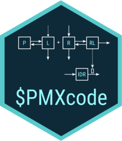

Changelog
Source:NEWS.md
pmxcode 0.2.2
- Add feature to fix variability estimates
- Fix issue in parameterization for log and logit scale
- Clean up documentation
pmxcode 0.2.1
- Change parameterization of logit model for consistency across scales / mu transformation
- Add list of parameters in headers
- Fix description issue in headers for biophase model
pmxcode 0.2.0
CRAN release: 2025-03-01
- Allow users to define parameter on linear, log, or logit scale
- For mrgsolve models, allow users to switch between random variability and posthoc estimates of variability
- UI refactoring using bslib
- Fixes typos in M3 method code
pmxcode 0.1.4
CRAN release: 2024-10-19
- Bug fixes in M3 method coding and app crash with certain model combination.